A book project · Baku, September 2026
Five Tales of Wisdom
Girls who chose for themselves
A small book of folk tales from Azerbaijan, Georgia and Uzbekistan. In each tale a girl or a young woman gets out of trouble by thinking for herself. Jamal Naghizade chose the tales, put the book together and printed more than 250 copies. On 27 September 2026 he gave them to pupils in grades 2 to 4 at a school in Baku.
- 5
- folk tales
- 3
- countries
- 250+
- copies printed
- 100+
- pupils in grades 2–4 received one
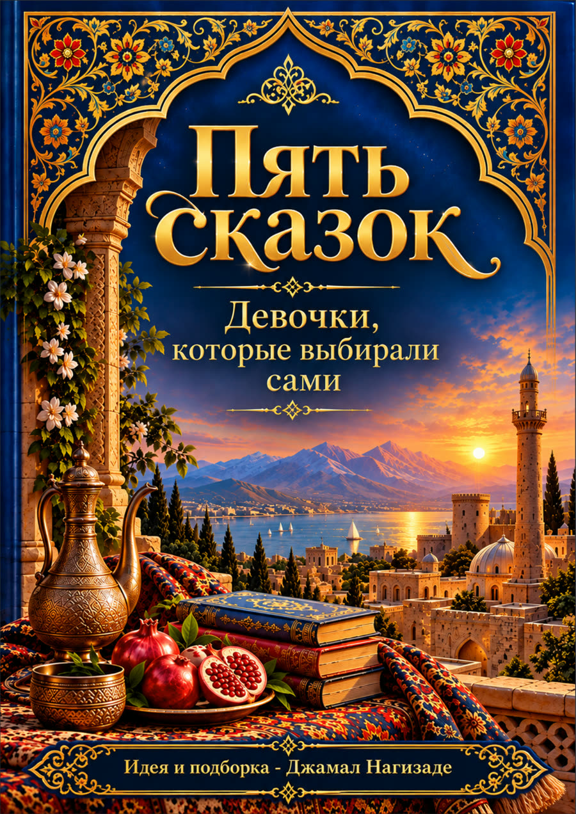
The book
Old stories in which the girl solves the problem
The book has 40 pages and is written in Russian. Its cover carries a second title, “Girls who chose for themselves”, and that line sums up what the five stories share. A shah's daughter, a farmer's daughter, a village girl, an orphan and a princess each come up against someone with more power than she has: a father, a ruler, a judge. Each of them wins by being cleverer, or by refusing to give in.
The texts are traditional folk tales. Nobody knows who first told them. They were passed on by word of mouth for generations and written down much later. Jamal printed them as they were recorded, without rewriting them. He made the illustrations, the cover and the layout himself with AI image tools.
Fairy tales are often among the first stories children hear about who is clever, who is brave and who needs rescuing. In many of the best-known ones the princess waits for help. In these five, the girls are the ones who find the way out.
The tales
Five tales from three countries
Two tales come from Azerbaijan, two from Georgia and one from Uzbekistan. Choose a tale to read what happens in it.
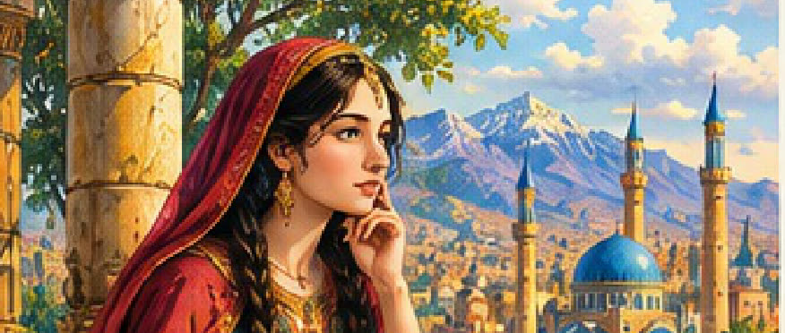
The Clever Girl
Сказка об умной девушке
The story
A shah asks his three daughters who builds a home, a man or a woman. The two older ones say a man. The youngest says a woman. Angry, he marries her to Ahmed, the laziest young man in the city, so she can prove it. Step by step she gets him out of bed and out to work, then sends him away with a caravan. With the money he sends home she builds a house finer than her father's palace. When the shah comes to visit, he has to admit that she was right.
Background
Azerbaijani tales were collected and printed in large numbers during the 20th century. The best-loved hero of the children's tales is Jirtdan, a small boy who beats a giant through his wits. This tale gives the same kind of quick thinking to a girl.
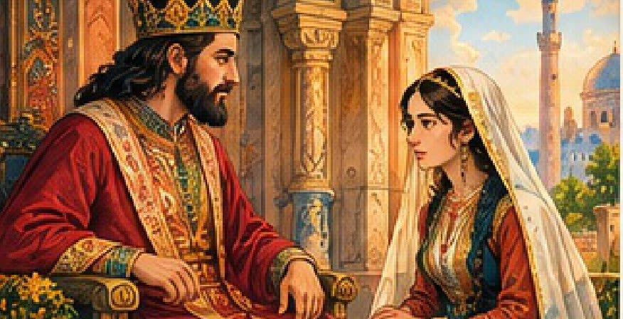
The Tsar and the Farmer's Daughter
Царь и крестьянская дочь
The story
A poor farmer finds a golden mortar in his field. His daughter warns him that if he takes it to the tsar, the tsar will demand the pestle too. He goes anyway, and that is exactly what happens. To save her father she answers the tsar's test: come to me neither dressed nor undressed, neither on foot nor riding. She arrives wrapped in a fishing net, pulled along by a donkey. Later she shows the tsar, in front of his whole court, that one of his judgements makes no sense.
Background
Folklorists file this story as tale type ATU 875, “The Clever Farmgirl”. The Brothers Grimm printed a German version in 1815, and the story has been recorded from Ireland to the Middle East. In the Grimm version the king marries the girl. The Georgian version in this book ends sooner: the tsar sends her home, which is all she wanted.
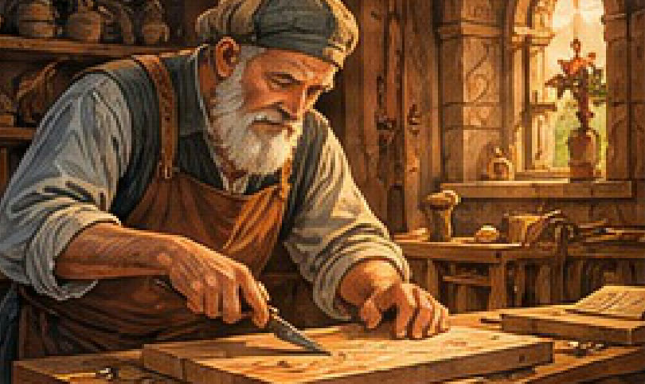
The Old Carpenter and His Daughter-in-Law
Старый плотник и его невестка
The story
A famous carpenter wants a clever wife for his son and tests each bride with riddles. A nobleman's well-educated daughter and then a princess cannot make sense of them. A village girl at her spinning wheel explains every one, and the son marries her. Years later an unjust tsar plans to lock the carpenter away so that he can never build for anyone else. The daughter-in-law locks the tsar's own son behind nine locks until the tsar lets the old man go and pays him for his work.
Background
The tale ends with a proverb: “A clever daughter-in-law sets a house on its feet; a foolish one knocks it over.” The carpenter chooses a bride for her mind, not for her family's rank, and that choice is what saves him.
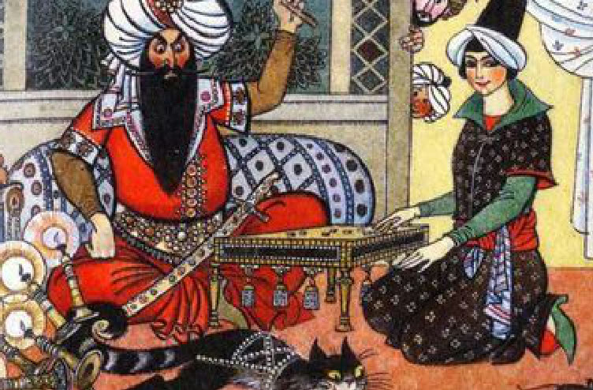
The Orphan Girl
Сказка о сироте
The story
An orphan girl who lives alone refuses to marry the captain of the town guard, a man old enough to be her father who already has a wife and children. To punish her he tells the judge she stole his calf. The judge, and after him the padishah, each promise to let her go if she marries him instead. She turns all three down, and in the end turns their own scheming against them and frees herself from them.
Background
There is no magic here, only a young woman with no family to protect her, facing the three men who hold power in her town. Like many old folk tales, it has a harsh ending. Its point is plain: she does not give in to any of them.
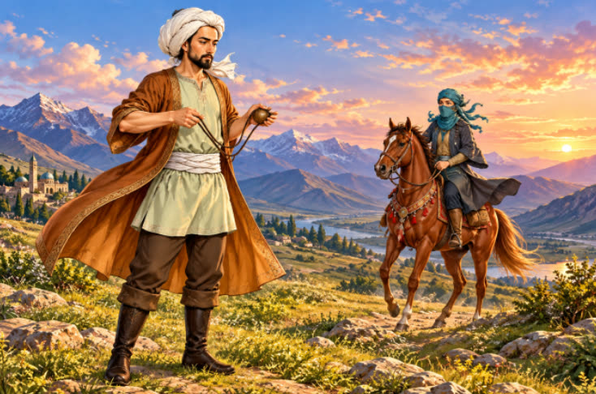
Ziyad-Batyr
Зияд-батыр
The story
Princess Kamarkhon can shoot a bow, throw a spear and fight with a sword better than anyone at her father's court, and she turns away every prince who asks to marry her. She has decided she will marry only Ziyad, the son of the court's master craftsman. When her father drives him out, she leaves home to be with him. Later, in Herat, the ruler wants her as his fourth wife and throws her into an underground prison when she says no. She still refuses.
Background
The tale brings in a real person. Alisher Navoi (1441–1501), the poet and statesman of Herat, frees Kamarkhon and takes the couple home. In Uzbekistan Navoi is regarded as the national poet. The tale itself is folklore, not history.
The book prints all five texts as they were recorded. The summaries on this page were written for this site.
The visit
One morning, five classes
The book went to the children it was made for: pupils aged about seven to ten, in classes taught in Russian, the language of the book.
- Date
- 27 September 2026
- School
- LANDAU School, Ganjlik campus / Simurq Liseyi, Baku
- Classes
- 5 classes, grades 2–4
- Pupils
- More than 100, each given a copy
Jamal went from class to class with a bag of books and handed a copy to every pupil. In each class he spoke to the children for a few minutes and asked the boys not to bully the girls. That request is the reason the book exists.
Class teachers stayed in the room during each visit. Many children opened the book straight away. Not every class was photographed, so the pictures on this page show only part of the day.
On the last page
The book ends with a photo of Jamal in a T-shirt that reads “Girls can. Women lead.” It comes from his June 2026 campaign with the Baku art and fashion brand Amorini Concept. In one class a boy found it and held the page up for everyone to see.
See the T-shirt campaign →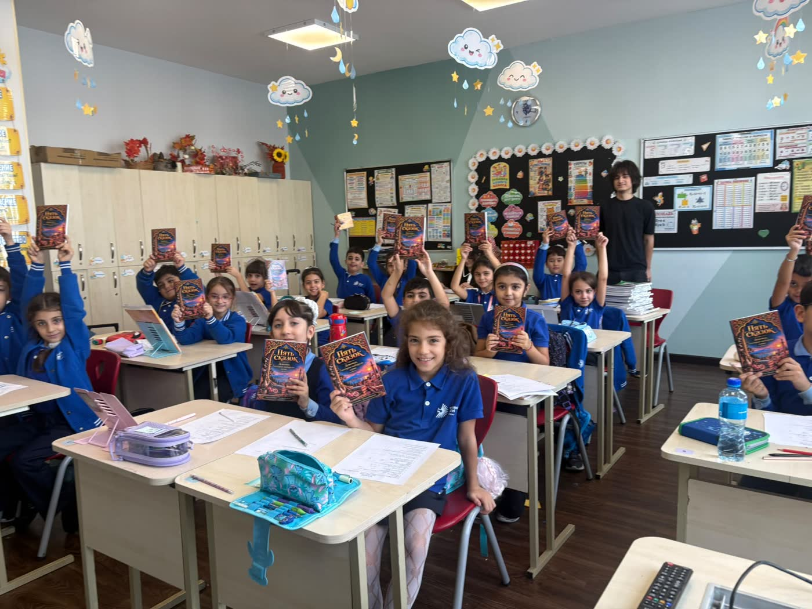
Photographs
From the day
Taken during the visit. The school agreed to the photos being published.
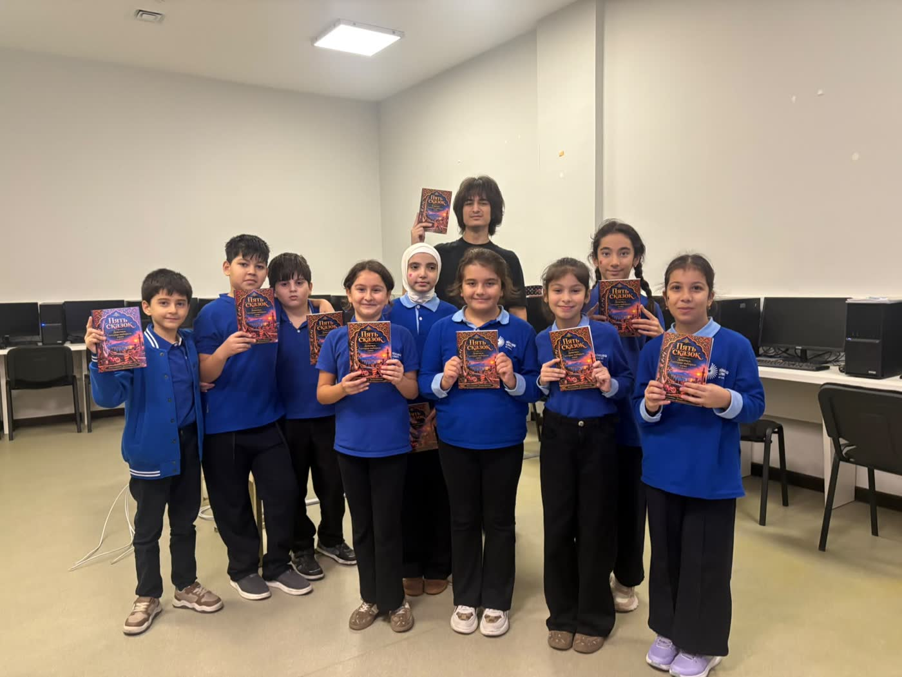
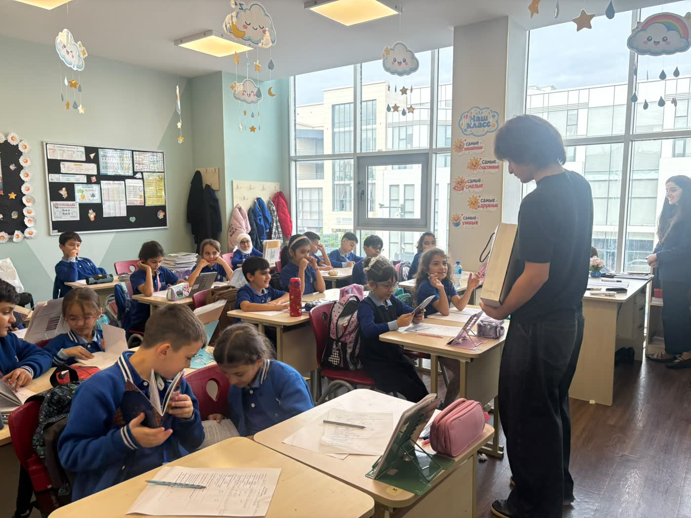
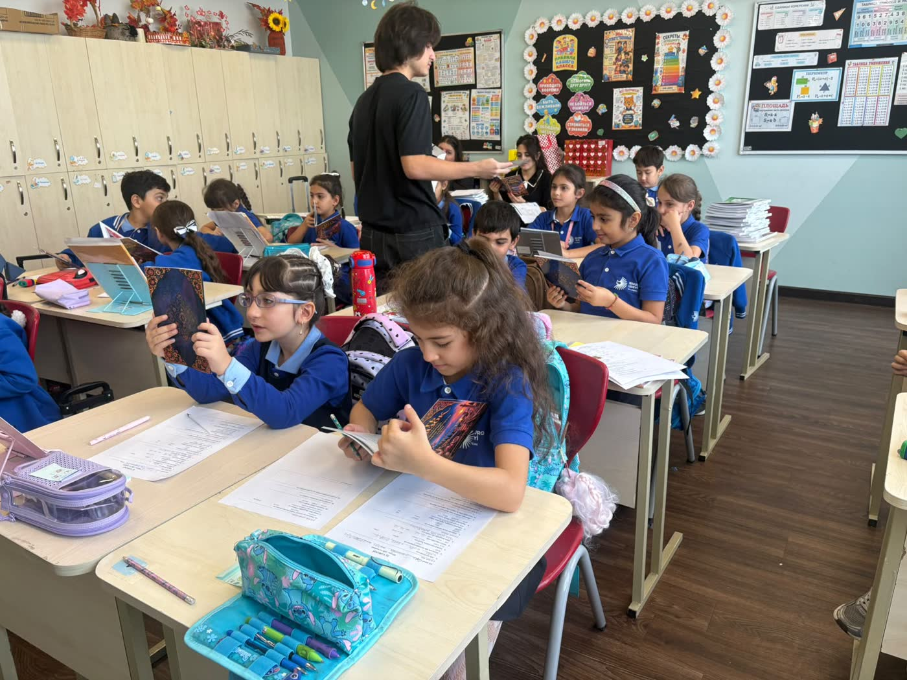
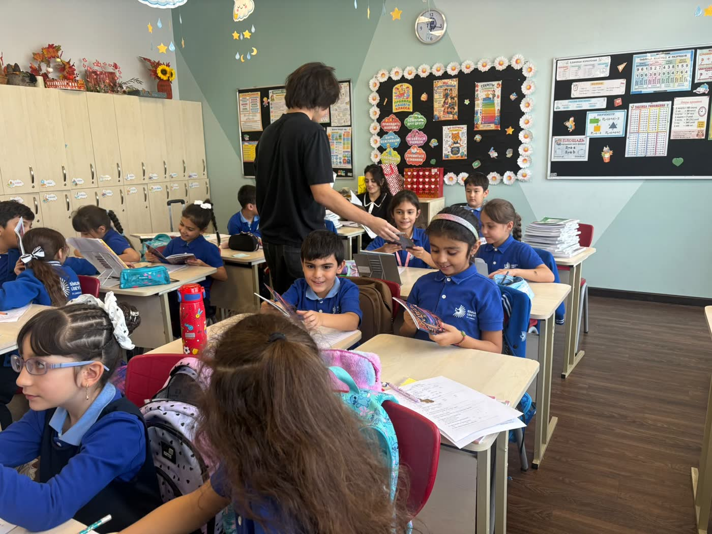
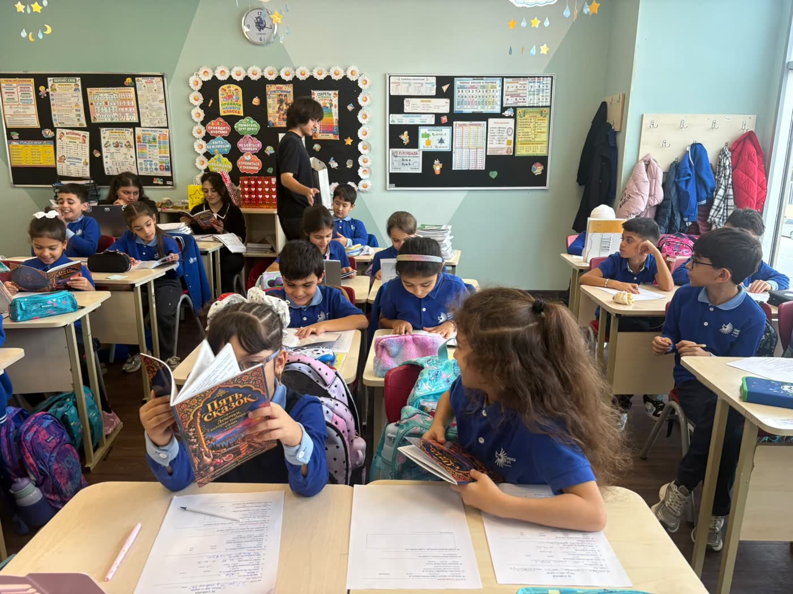
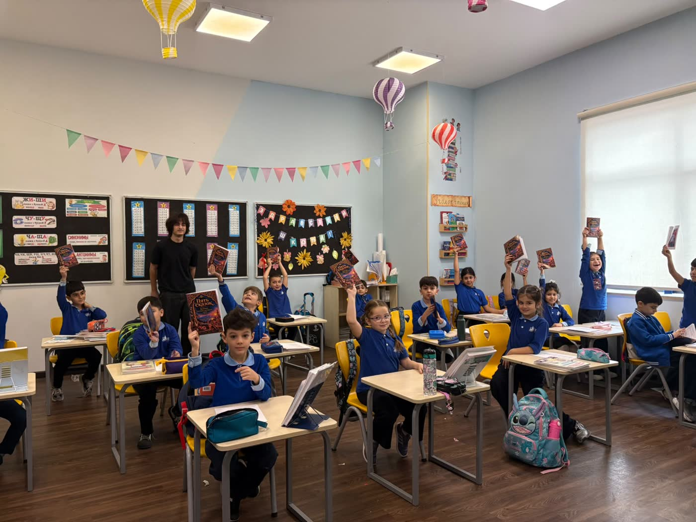
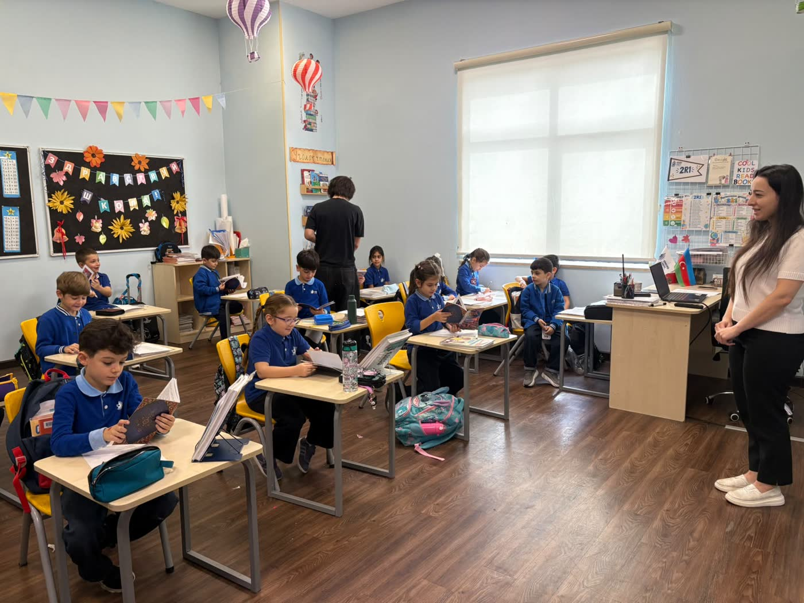
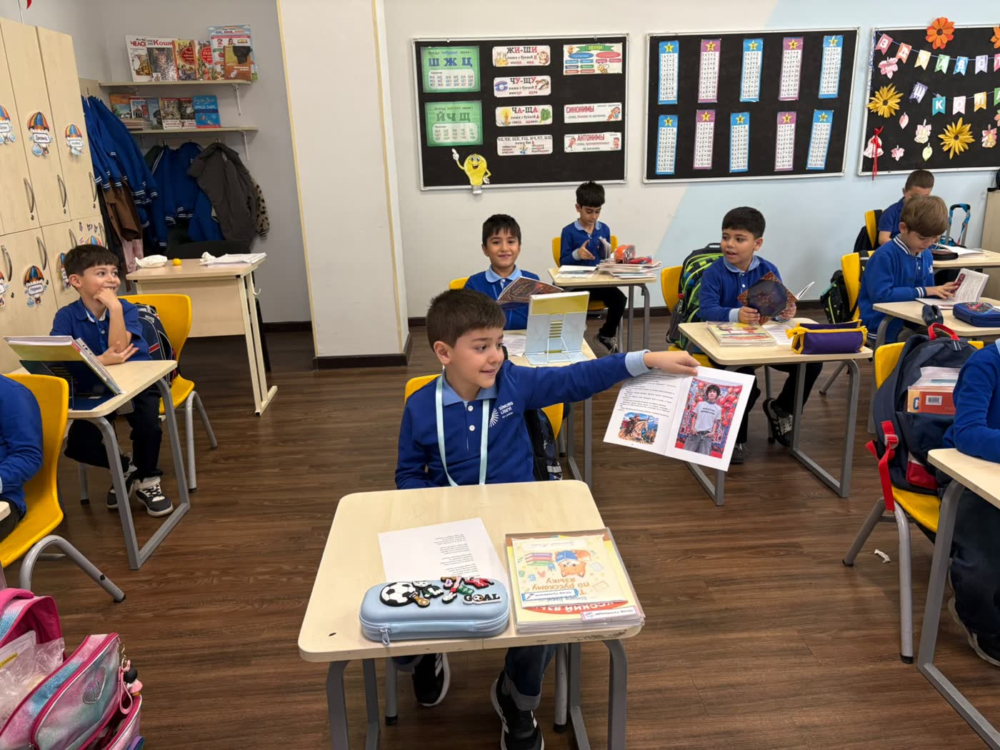
Credits
About the book
- Title
- Five Tales of Wisdom (Russian: «Пять сказок о мудрости»)
- Idea and selection
- Jamal Naghizade
- Texts
- Traditional folk tales of Azerbaijan, Georgia and Uzbekistan, printed without changes
- Cover, illustrations and layout
- Jamal Naghizade, made with AI image tools
- Language and length
- Russian, 40 pages
- Print run
- More than 250 copies, privately funded
- Given out at
- LANDAU School, Ganjlik campus / Simurq Liseyi, Baku, 27 September 2026
Contact
Get in touch
For questions about the book or the school visit: